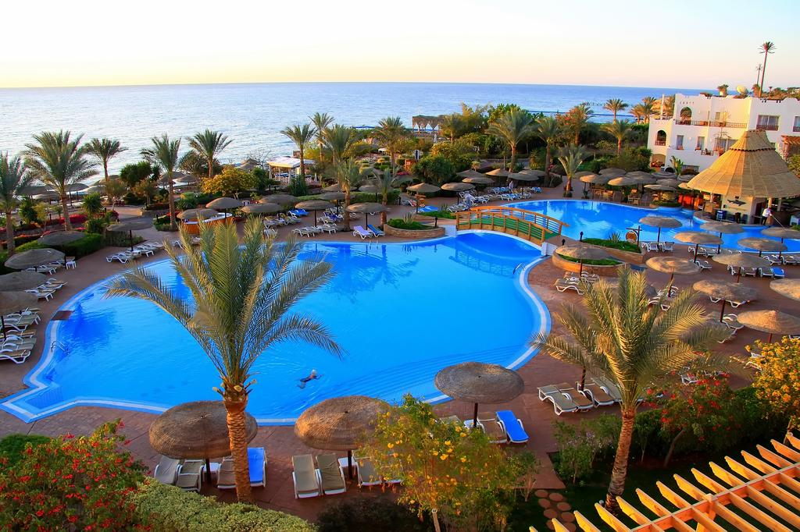
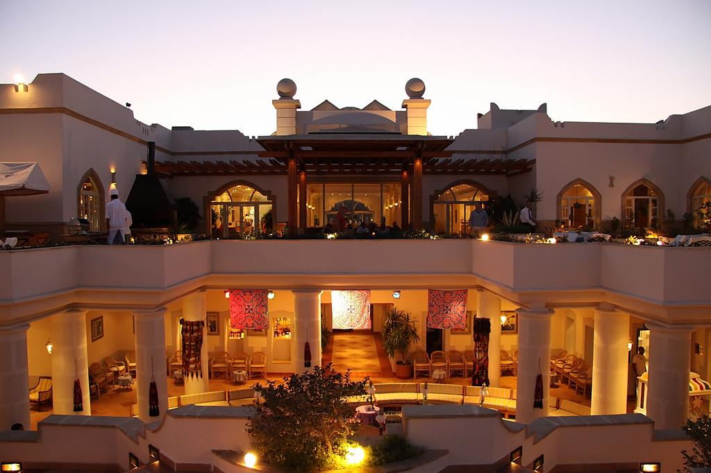
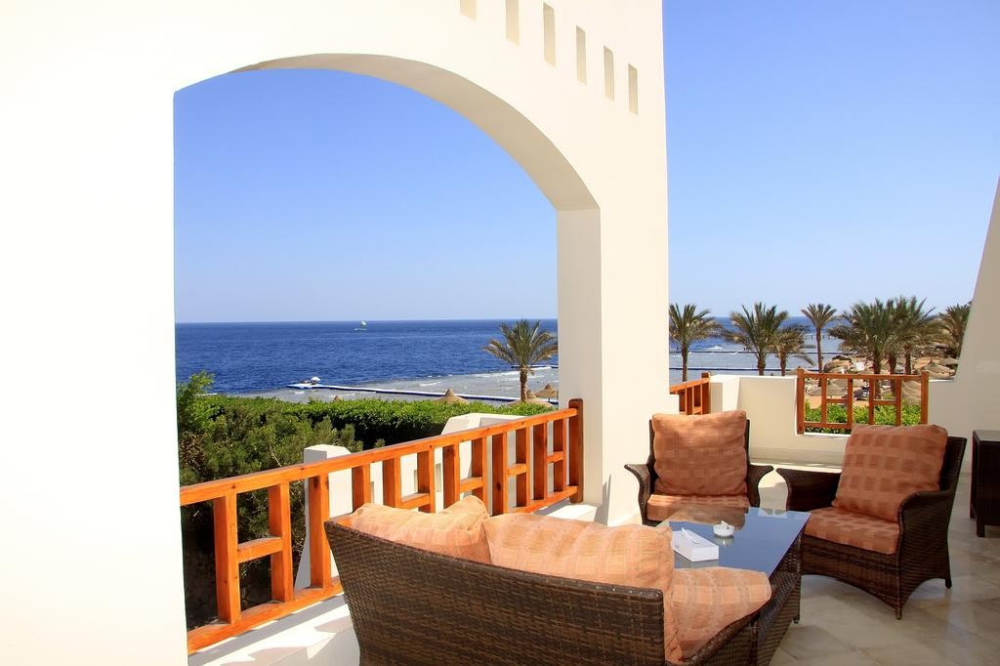
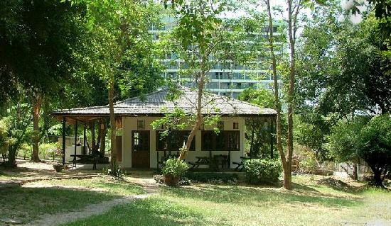
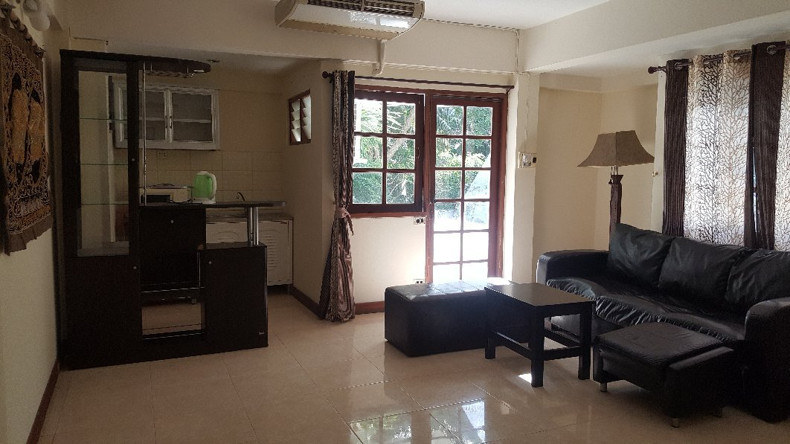
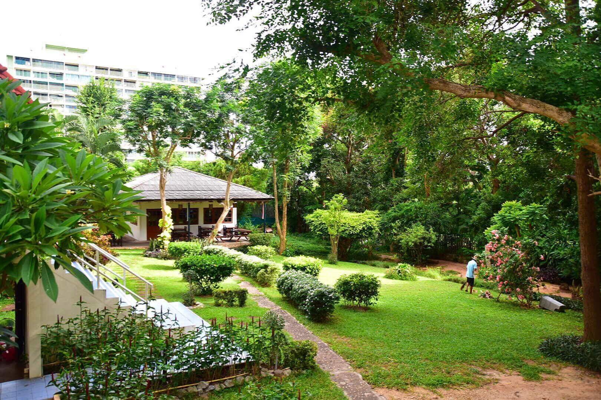
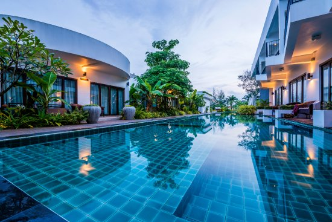
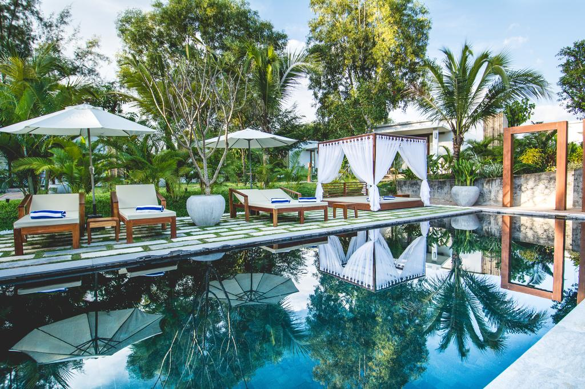
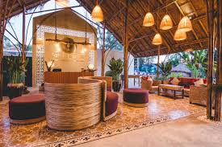

Отель очень удачно расположен в бухте Shark's Bay, на одном из самых лучших пляжей с рифами в Шарме, прямо напротив острова Тиран. Всего в 6 км от аэропорта, в 7 км от Наама Бэй.
Очень красивый пляж и отличное место для снорклинга прямо за порогом Вашего номера.
По соседству от отеля расположены гольф-центр и международный бизнес-центр.
В нескольких минутах езды расположены различные развлечения, такие как аквапарк, центр верховой езды, картинг, каток и другие.
Если Вы приехали расслабиться, насладитесь известными коралловыми рифами Красного моря или исследуйте окрестности Шарма, ведь отельSultan Gardens идеально для этого расположен.
...Представьте себе идеальный 5* курорт на берегу Красного моря. Курорт был удостоен нескольких наград за его красоту, песчаный пляж, коралловый риф и роскошные сады.
Здесь Вы можете отдохнуть и повеселиться, мы обеспечим хороший отдых для посетителей любого возраста. У нас очень комфортабельные номера, вкусная еда и приветливый персонал,
который воплотит в жизнь любую Вашу мечту.
Откройте для себя отельSultan Gardens Resort в прекрасном Шарм-Эль-Шейхе.Мы ждем Вас для того, чтобы оправдать все ожидания.
Sultan Gardens Resort (Султан Гарденс Резорт) - пятитизвёздочный гостиничный комплекс с комфортабельными номерами, вкусной едой и профессиональным сервисом. Отель расположен на
самом берегу Красного моря, где красота частного песчаного пляжа и кораллового рифа дополняется красотой ухоженных зелёных садов.
information about hotel Royal Grand Sharm:



Найти идеальный семейный отель в Шарм-эль-Шейхе не должно быть сложной задачей. Добро пожаловать в Роял Гран Шарм Отель, прекрасный вариант для размещения подобных вам путешественников.
Во время пребывания в Роял Гран Шарм Отель гости могут посетить Al Mustafa Mosque (3,9 км) и The Heavenly Cathedral (3,9 км), одни из самых популярных достопримечательностей Шарм-эль-Шейха.
...Роял Гран Шарм Отель предлагает гостям номера, оборудованные ТВ с плоским экраном, кондиционером и мини-баром. Гости в любой момент могут выйти в Сеть благодаря бесплатному Интернету.
Отель предоставляет такие услуги, как обслуживание номеров, услуги консьержа и терраса на крыше, чтобы сделать пребывание здесь еще более приятным. Также к услугам гостей бассейн и завтрак. У гостей, приехавших на автомобиле, есть доступ к бесплатной парковке.
При посещении Шарм-эль-Шейха вам может захотеться отведать крабов в одном из близлежащих ресторанов, например в Fares Seafood или Fares Seafood - IL Mercato.
Если вы хотите лучше узнать Шарм-эль-Шейх, посетите исторический музей, например King Tut Museum.
Сотрудники Роял Гран Шарм Отель с нетерпением ждут вас в Шарм-эль-Шейхе.
Hillside Resort Pattaya
Хилсайд Резорт Паттайя



Ищете семейный отель в Паттайе? Можете больше не искать. Хилсайд Резорт Паттайя подойдет вам наилучшим образом.
Близкое расположение к одним из самых популярных достопримечательностей Паттайи, таким как Pattaya Hill Top (0,5 км) и Pattaya City Sign - Viewpoint (1,3 км), делает отель Хилсайд Резорт Паттайя очень привлекательным для туристов.
Номера в Хилсайд Резорт Паттайя оборудованы
...кондиционером и холодильником. Гости могут быть постоянно на связи благодаря бесплатному Wi-Fi.
К вашим услугам во время пребывания в Хилсайд Резорт Паттайя также бассейн и лобби. Ищете, где оставить машину? Хилсайд Резорт Паттайя предлагает бесплатная парковка
предоставляется Во время пребывания в Паттайе, возможно, вам захочется посетить некоторые рестораны рядом с Хилсайд Резорт Паттайя, например Cabbages and Condoms (1,0 км), The Sky Gallery Restaurants (0,8 км) и Pattaya Beer Garden (1,5 км).
В Паттайе также находится Love Art Park, популярный монумент, расположенный не очень далеко от отеля Хилсайд Резорт Паттайя.
Сотрудники Хилсайд Резорт Паттайя с нетерпением вас ждут. Вы будете приятно удивлены уровнем обслуживания.
Ren Resort Cambodia



Курортный отель Ren с открытым бассейном расположен на пляже Отрес 2. Из отеля открывается красивый вид на океан. Гостям этого современного курортного отеля предлагается бесплатный завтрак, который сервируют на пляже в ресторане Ren. Отель находится в 8 км от центра Сиануквиля.
...Роскошно оформленные номера оснащены кондиционером, телевизором с плоским экраном, мини-баром и сейфом. Из некоторых номеров открывается вид на море или пляж. В распоряжении гостей собственная ванная комната с душем.
Гости курортного отеля могут отдохнуть в изысканном баре и на шезлонгах на открытом воздухе. На территории обустроена бесплатная парковка.
Курортный отель Ren находится в 6,6 км от пляжа Серендипити и в 7,3 км от пляжа Очхеутеал. До супермаркета Samudera — 7,9 км. Расстояние до международного аэропорта Сиануквиля составляет 17 км.